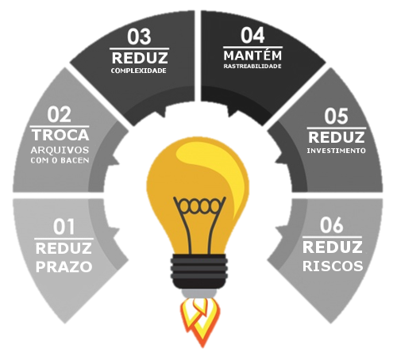

PDCTA (STA BACEN)
Sistema Centralizador de Transferência de Arquivos, é a solução corporativa que substitui os aplicativos PSTAW10 e PSTAC10 do BACEN. Gerencia, transmite e controla o histórico dos envios de arquivos ao BACEN em um só lugar. Com interface e usabilidade muito mais fácil e amigável.

Usabilidade
O padrão visual do PD_CTA assemelha-se ao STA do BACEN, reduzindo assim a curva de aprendizagem dos usuários
Benefícios
Transforma as rotinas corriqueiras executadas por usuários, de envio e recebimento de arquivos, em ações automáticas executadas pelo sistema.
O PD_CTA reduz CUSTOS:
- Diminui a complexidade na adequação de sistemas ao consumo do web services do BACEN.
- Redução na manutenção evolutiva, por conta de melhorias implementadas no STA.
- Aumento da disponibilidade dos responsáveis pelo envio manual dos documentos.

O PD_CTA diminui RISCOS:
- Redução de riscos operacionais com a implementação de processos executados por serviços agendados.
- Validação de arquivos XML de forma integrada e com controle histórico de versões do XSD.
- Arquivos disponíveis para a IF baixados assim que disponibilizados.
O PDCTA melhora o CONTROLE:
- Permite que o ciclo de vida de um arquivo seja rastreado.
- Controle de acesso aos dados por usuário, sem a necessidade de cadastramento junto ao BACEN.
- Envio de Email para pessoas relacionadas ao Documento em cada fase do processo.
FUNCIONALIDADES
UPLOAD
O envio de arquivos pode ser executado de três formas diferentes:
- Síncrona: para sistemas que necessitam de uma confirmação de envio dentro do ciclo de vida da transação, o PD_CTA disponibiliza um Web Service.
- Assíncrona: um serviço pré-agendado para horários a definir, irá recuperar o arquivo disponibilizado e se encarregará de realizar o envio. Após confirmação de recebimento pelo BACEN um XML de resposta estará disponível.
- Contingência: para situações onde as duas anteriores não tiveram efetividade o usuário poderá fazer o envio manualmente.

DOWNLOAD
O recebimento de arquivos é realizado de duas formas: Assíncrona e Contingência.
CONSULTA
Estado dos arquivos atualizados de forma automática ou através do acesso a tela do PD_CTA.